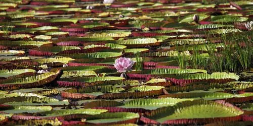

水生植物 · 植物界
王莲 Victoria amazonica

睡莲科大型浮叶水生植物，叶片直径可达 3 米，能承载数十公斤重物，原产南美亚马孙河流域，是著名的大型水生观赏植物。
- 分类
- 门被子植物门纲木兰纲目睡莲目科睡莲科属王莲属
- 栖息环境
- 亚马孙河流域的静水河湾与沼泽，喜高温、高湿、阳光充足
- 地理分布
- 原产南美洲亚马孙河流域，中国北京、广州等地植物园引种栽培
- 保护级别
- 暂无评估
物种志
王莲为睡莲科王莲属多年生大型浮叶水生草本，根状茎粗壮，生于水底泥中。叶片圆形，直径 1–3 米，初生叶较小，成熟叶片背面密生尖刺，叶缘向上卷起形成圆盘状，浮于水面。花单生，直径 25–40 厘米，初开为白色，次日转为粉红色，花期 7–9 月，果期 9–10 月，果实球形、密被刺。
王莲原产南美洲亚马孙河流域，喜高温、高湿和充足阳光，要求水深 1 米以上、水温 25℃ 以上的静水环境。叶片背面有粗壮的网状叶脉，像伞骨一样支撑叶面，浮力很大，可承载 20–50 公斤重物，是著名的“水上奇观”。王莲花期只有两天：第一晚开白色花、释放香气吸引甲虫传粉，第二晚转为粉红色后闭合沉入水中结果。中国多地植物园引种栽培，供游客观赏。
形态与习性
- 株高叶片直径 1–3 米
- 花期7–9 月，单朵花仅开两晚
- 果期9–10 月，果实球形密被刺
- 光照极喜光，需全日照
- 水分水深 1 米以上，水温 25℃ 以上为宜
- 土壤富含腐殖质的塘泥
- 繁殖播种繁殖
趣味知识
- 王莲叶片直径可达 3 米，背面网状叶脉提供浮力，可承载 20–50 公斤重物。
- 王莲花只开两晚：第一晚白色、散发香气吸引甲虫，第二晚转为粉红色。
- 成熟王莲叶片背面密生尖刺，可防止鱼类和水生动物啃食。
- 王莲原产亚马孙河流域，19 世纪引种到英国，曾引起园艺界轰动。